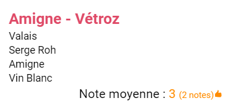

Dans le cas où vous n'avez pas encore noté le vin, alors il est affiché avec une note qui correspond
à la moyenne des notes des concours pour ce vin suivi, entre parenthèses, du nombre de notes constituant la
moyenne :

Si la note est bonne ou excellente (4 ou 5), elle est affichée en vert.
Si la note est moyenne (3), elle est affichée en orange.
Si la note est médiocre (2), elle est affichée en rouge.
Pour noter un vin, il suffit de toucher la petite fiche (voir images ci-dessus).